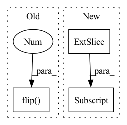

Pattern ID :14310

Before Change
x = self.pad(x)
x = x.unfold(-1, self.filter_order + 1, 1)
y = (x.flip(-1) * self.intpl(h)).sum(-1)
return y
After Change
x = x.unfold(-1, self.filter_order + 1, 1).flip(-1)
h = self.intpl(h)
if self.ignore_gain:
h = h / h[..., :1]
y = (x * h).sum(-1)
return y
In pattern: SUPERPATTERN
Frequency: 3
Non-data size: 3
Instances
Fragment ID: 47384171
Project Name: sp-nitech/diffsptk
Commit Name: e722d6bd6486d7dbb2ba30445c7131b9d0c2536e
Time: 2022-03-21
Author: takenori.yoshimura24@gmail.com
File Name: diffsptk/core/zerodf.py
M Class Name: AllZeroDigitalFilter
N Class Name: AllZeroDigitalFilter
M Method Name: forward(3)
N Method Name: forward(3)
M Parent Class: nn.Module
N Parent Class: nn.Module
M File Name: diffsptk/core/zerodf.py
N File Name: diffsptk/core/zerodf.py
M Start Line: 72
M End Line: 73
N Start Line: 78
N End Line: 82
'>
Before Change
if len(frames) > 0: img = frames[-1]
else: img = np.zeros((112, 112, 3), dtype=np.uint8)
if crop_augment: pass // TODO: implement random crop
if mirror_augment: img = cv2.flip(img, 1)
// TODO: add temporal augmentation (repeat, deletion)
frames.append(img)
else:
cap = cv2.VideoCapture(path)
After Change
if is_training:
crop_x = random.randint(0, 16)
crop_y = random.randint(0, 16)
img = img[crop_y: crop_y + 112, crop_x: crop_x + 112]
else:
img = img[8: 120, 8: 120]
if mirror_augment and is_training: img = cv2.flip(img, 1)
// TODO: add temporal augmentation (repeat, deletion)
'>
Fragment ID: 47384170
Project Name: sailordiary/m3f.pytorch
Commit Name: 639f60090b44d3fdb3b40ae0df467ffed523da9e
Time: 2020-02-01
Author: me@sailorzhang.com
File Name: models/dataset.py
M Class Name: AnonimousClass
N Class Name: AnonimousClass
M Method Name: load_video(7)
N Method Name: load_video(6)
M Parent Class:
N Parent Class:
M File Name: models/dataset.py
N File Name: models/dataset.py
M Start Line: 50
M End Line: 75
N Start Line: 47
N End Line: 70
'>
Before Change
def HorizontalFlip(batch_img):
if random.random() > 0.5:
batch_img = cv2.flip(batch_img, 2)
return batch_img
After Change
def HorizontalFlip(batch_img):
if random.random() > 0.5:
batch_img = np.ascontiguousarray(batch_img[:,:,::-1])
return batch_img
'>
Fragment ID: 47384168
Project Name: vipl-audio-visual-speech-understanding/learn-an-effective-lip-reading-model-without-pains
Commit Name: 82feb433d9703178768e3030d970568e6cbc811f
Time: 2020-12-08
Author: fengdalu@gmail.com
File Name: utils/cvtransforms.py
M Class Name: AnonimousClass
N Class Name: AnonimousClass
M Method Name: HorizontalFlip(1)
N Method Name: HorizontalFlip(1)
M Parent Class:
N Parent Class:
M File Name: utils/cvtransforms.py
N File Name: utils/cvtransforms.py
M Start Line: 41
M End Line: 41
N Start Line: 41
N End Line: 41